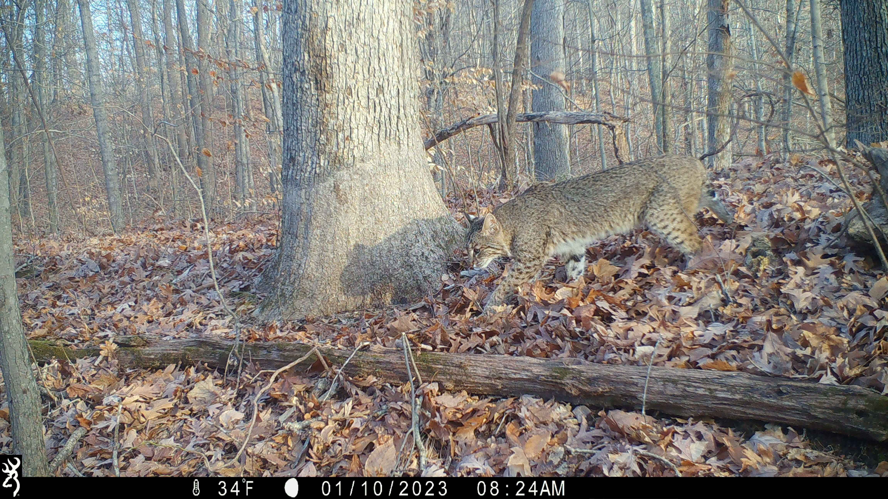
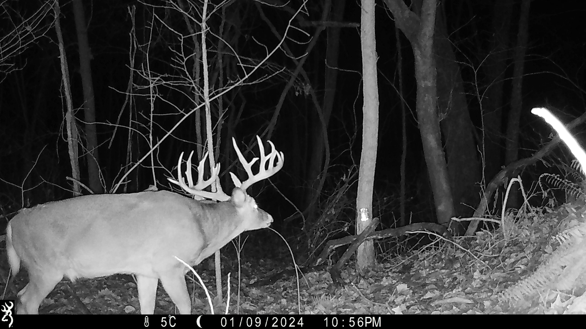
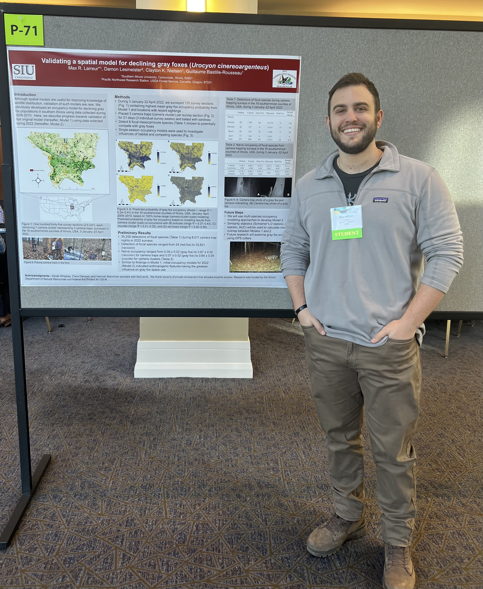

About Me
Hello, my name is Max Larreur and I am a PhD student within the Center for Wildlife Sustainability Research at Southern Illinois University - Carbondale. Here you will find details about some of my past and ongoing research, publications, CV, and contact information. My research is geared toward increasing our knowledge on wildlife spatiotemporal behavior.
